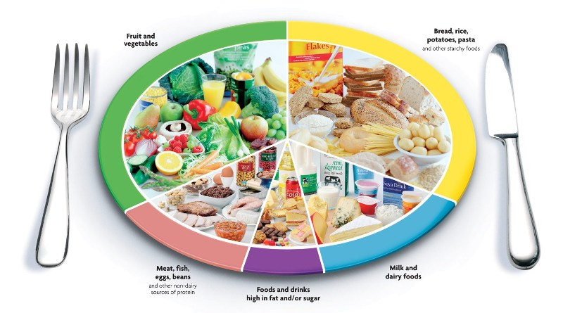
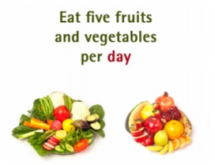

According to the World Health Organization (WHO), of the 57 million global deaths in 2008, 36 million, or 63%, were due to non-communicable diseases (NCDs), principally cardiovascular diseases, diabetes, cancers and chronic respiratory diseases (WHO, 2011a). Nearly 80% of these deaths occur in low-and middle-income countries.

- High salt consumption is an important determinant of high blood pressure and cardiovascular risk and increases the risk of stomach cancer;
- High consumption of saturated fats and trans-fatty acids is linked to heart disease;
- Dietary factors have been linked with diabetes;
- Red and processed meat consumption is linked with some cancers between body fatness and some leading cancers.
- The WHO estimates that 2.8 million people die each year as a result of being overweight or obese.
- A healthy diet helps protect against malnutrition in all its forms, as well as non communicable diseases (NCDs), including diabetes, heart disease, stroke and cancer.
- Unhealthy diet and lack of physical activity are leading global risks to health.
- Energy intake (calories) should be in balance with energy expenditure.
- Total fat should not exceed 30% of total energy intake to avoid unhealthy weight gain.
- Less than 30% of total energy intake from fats. Unsaturated fats (e.g. found in fish, avocado, nuts, sunflower, canola and olive oils) are preferable to saturated fats (e.g. found in fatty meat, butter, palm and coconut oil, cream, cheese, ghee and lard). Industrial trans fats (found in processed food, fast food, snack food, fried food, frozen pizza, pies, cookies, margarines and spreads) are not part of a healthy diet (WHO, 2015).
- Fruits, vegetables, legumes (e.g. lentils, beans), nuts and whole grains (e.g. unprocessed maize, millet, oats, wheat, brown rice).
- At least 400 g (5 portions) of fruits and vegetables a day (WHO, 2003), reduces the risk of Non communicable diseases and helps ensure an adequate daily intake of dietary fibre.
- Potatoes, sweet potatoes, cassava and other starchy roots are not classified as fruits or vegetables.
- Less than 10% of total energy intake from free sugars (WHO, 2015) which is equivalent to 50 g (or around 12 level teaspoons) for a person of healthy body weight consuming approximately 2000 calories per day, but ideally less than 5% of total energy intake for additional health benefits.
- Alcohol consumption should be in moderation. Reducing consumption of sugar-sweetened beverages and red and processed meat.

- Drink water instead of sugary drinks.
- Eat fresh fruits and raw vegetables as snacks.
- Less than 5 g of salt (equivalent to approximately 1 teaspoon) per day (6) and use iodized salt.
- High salt consumption and insufficient potassium intake (less than 3.5 g) contribute to high blood pressure, which in turn increases the risk of heart disease and stroke (WHO, 2012).
- 1.7 million deaths could be prevented each year if people’s salt consumption were reduced to the recommended level of less than 5 g per day (Mozaffarian et al., 2014).
- Choose variety of vegetables from all of the subgroups—dark green, red and orange, legumes (beans and peas), starchy, and other.
- Consume less than 10 percent of calories per day from saturated fats, and less than 2,300 milligrams per day of sodium.
- Reduce Fat intake by –
- removing the fatty part of meat.
- using vegetable oil (avoid animal oil).
- boil, steam or bake rather than fry.
- Avoiding processed foods containing trans fats; and limiting the consumption of foods containing high amounts of saturated fats (e.g. cheese, ice cream, fatty meat).
- Limit consumption of dietary cholesterol to 300 mg per day.
- Include Fat-free or low-fat dairy, including milk, yogurt, cheese, and/or fortified soy beverages.
Governments have a central role in creating a healthy food environment that enables people to adopt and maintain healthy dietary practices.
- Increase incentives for producers and retailers to grow, use and sell fresh fruits and vegetables.
- Reduce incentives for the food industry to continue or increase production of processed foods with saturated fats and free sugars.
- Encourage reformulation of food products to reduce the contents of salt, fats (i.e. saturated fats and trans fats) and free sugars.
References:- Diet, nutrition and the prevention of chronic diseases: report of a Joint WHO/FAO Expert Consultation. WHO Technical Report Series, No. 916. Geneva: World Health Organization; 2003.
- Guideline: Sugars intake for adults and children. Geneva: World Health Organization; 2015.
- World Health Organization. (WHO 2011a). Global status report on non-communicable diseases 2010. Geneva: World Health Organization.
- Guideline: Healthy Diet. Geneva : World Health Organization; 2015.
- Mozaffarian D, Fahimi S, Singh GM, Micha R, Khatibzadeh S, Engell RE et al. Global sodium consumption and death from cardiovascular causes. N Engl J Med. 2014; 371(7):624-634.
- Guideline: Potassium intake for adults and children. Geneva: World Health Organization; 2012.
Related Links: